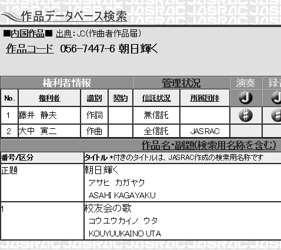
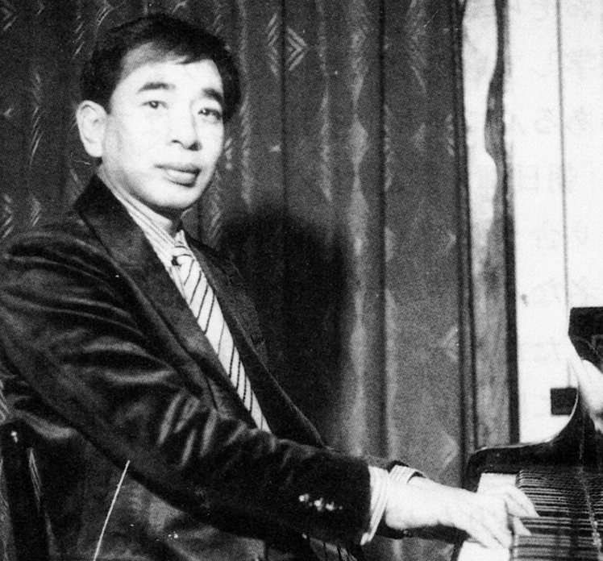
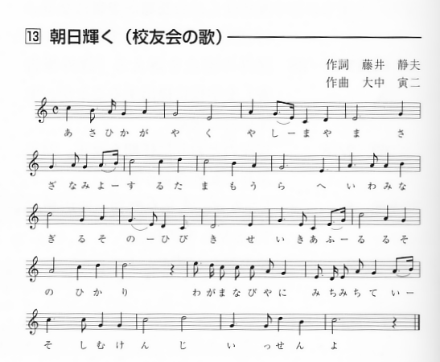

「朝日輝く(校友会の歌)」の作曲者について
朝日輝く（校友会の歌）」の作曲者について、第15回から第31回までの東京玉翠会総会プログラムには「不詳」と表記されています。
しかし、校友会の歌は昭和18年から昭和26年まで高松中学、高松高校の校歌として歌い継がれてきた曲です（それまでは「橘中佐」の曲を借用していました）。そのような由緒ある曲が「作曲者不詳」というのは何とも理解できないものがあり、高中の先輩方からも疑問の声が寄せられていました。
そこで校友会の歌の作曲者が誰であるかを調査しました。
「作曲者不詳」となった経緯
第15回以降の総会プログラムで「作曲者不詳」と表記されることになった経緯は次のとおりです。総会プログラム第1回から第7回までは、校友会の歌の作曲者は表記していませんでした。
ところが、第8回から第12回まで、どういう経緯かは不明ですが、「作曲 荒井三郎」と記載されました。ちなみに、荒井三郎氏は高中音楽教師です。
これに対し、やはり高中教師であった菊村氏が、第12回総会プログラムで、「作曲者は大中寅二氏である」と具体的なエピソードを交えて述べられました。大中寅二氏は、島崎藤村作詩の「椰子の実」を作曲した方で、校歌も多く作曲しています。
これを受けて、第13回、第14回総会プログラムでは「これまで作曲者は荒井三郎氏としてきたが、菊村氏が『作曲者は大中寅二氏である』と述べているので、作曲者を記載しないことにする。」と注意書きをしました。
ところが、第15回総会プログラムでは、注意書きをしないまま「作曲者不詳」と表記し、それが第31回プログラムまで続いていたのです。
作曲者が大中寅二氏であることの根拠
しかし、以下の理由から校友会の歌の作曲者は大中寅二氏で間違いないだろうと思います。第12回東京玉翠会総会プログラムにおいて、菊村氏は、次のとおり具体的エピソードを交えて「作曲者は大中寅二氏である」と断定しています。（後記資料1参照）
「高松中学の水上校長先生は、『現在の高中の校歌は橘中佐の歌だ』とおっしゃって、（新しい曲の必要性を説いていた。）」
「昭和18年、私の恩師の大中寅二先生に作曲を頼む事になった。校歌が完成したのが昭和18年10月であり、水上校長先生と霊南坂教会に行き、大中先生が楽譜を水上校長先生に渡して下さった。お礼として百円を渡したところ（当時の教員の初任給は50円）、大中先生は、アアと言った切り、余り驚きもせず受け取られて領収書を書かれた。」
「この曲は、『朝日輝く屋島山～』でも言葉のアクセントと曲のアクセントがピッタリ合っており、これは山田耕作の高弟の一人である大中先生の特徴である。」
このように菊村氏の話は、楽譜の受け取り場面など非常に具体的であり、その信頼性は極めて高いと思います。
さらに調べると、「玉翠 創立70周年記念特集号」において、鈴木次郎氏が「文化祭 高中展」を見た感想として、「曲は二つ。新しいのは『五十周年記念に大中寅二作曲』とある」と書いていました。（後記資料2参照）
この鈴木氏の話から、高中創立50周年を記念して、大中寅二氏が新しく作曲したということが分かります。これは、菊村氏の話とも平仄が合っています。
また、玉翠会発行の「創立110周年記念誌」には、校友会の歌の作曲者を「大中寅二」と明記されていました。（後記資料3参照）

もともと高高関係者でない大中氏が、自分が作曲もしていないのに作曲者として登録することはあり得ないことですから、大中氏が作曲したことは間違いないであろうと思います。
他方、「作曲 荒井三郎」の表記は、第8回東京玉翠会総会プログラム(平成2年7月)が初見であり、その後第12回総会プログラムまで記載されていましたが、それ以外に荒井三郎氏を作曲者とする記録は見つかりませんでした。
なお、菊村氏は、「荒井先生が伴奏などを変えたらしい」と述べて、それが「作曲 荒井三郎」と誤記された原因ではないかと推測しています。
以上のような理由から、校友会の歌の作曲者が、「椰子の実」を作曲した大中寅二氏であることは確実であろうと思います。
そこで、学年幹事会の承認を得たうえで、第32回総会プログラムからは、校友会の歌の作曲者を「大中寅二」と表記することになりました。
また、この調査結果を高中会幹事の方にも報告したところ、先輩方から非常に喜んでいただき、萱原博美様（高中昭20年卒）からは以下の手紙をいただきましたので、その一部をご紹介いたします。
高中先輩萱原博美様からの手紙
先日「朝日輝く（校友会の歌）の作曲者｣についての詳細な報告書をお送り頂きありがとうございます。作曲者が大中寅二という有名な方に作曲して頂いたことがはっきりしてよかったです。当時を振り返ってみますと、私は昭和16年4月高中に入学、校歌は有名な軍歌「橘中佐」と同じ曲でしたので直ぐ歌えました。
昭和17年4月に志村二郎校長から水上正広校長に替わり、昭和18年に新しい歌（曲）が披露され、歌い始めました。
その頃、中学ではめずらしく音楽に才能を発揮しておられた椎名さんという2年先輩の名前がなぜか不思議と頭に残っていました。東京玉翠会の会誌に「校友会の歌 作曲者不詳」とあったのを見て、椎名さんに尋ねたら何らかの糸口がつかめるのではないかと、かねてから思っていました。
そしてこの度、調査資料をいただき、「菊村紀彦（談）」となっていたので玉翠会の同窓会名簿を見ましたら、私の想像していた通り、椎名重胤（日本佛教学院長 ペンネーム菊村紀彦）とあり、2年先輩であることが判りました。
資料1
校歌(現、校友会の歌)の作曲者について 菊村紀彦（談）(昭和19年卒)
（東京玉翠会第12回総会プログラムより）
ーー菊村先生は、永年に亘り仏教学者として、又、音楽家としてご活躍でいらっしゃいますが、玉翠会会報を御覧になりまして、掲載されている校歌（昭和20年当時の校歌、現・校友会の歌）の作曲者の名前が違うことにお気づきになられたそうですが、その事情を御存知でしたら、お教え願いますでしょうか。

菊村紀彦先生(1971年)
詞は藤井静男という先生がお作りになりました。藤井先生は、オニさんというあだ名の国語漢文の有名な先生でしたね。詞は非常に格調に満ちております。
"朝日輝く屋島山 さざ波寄する玉藻浦"と歌われています。
ところが当時は作曲家がいらっしゃらないんですね。大正４年の事ですので約八十年前の話ですね。当時は、今で言うと替え歌で皆さんが歌っておりました。なぜかと申しますと、日露戦争の「橘中佐」という有名な歌（この方は日露戦争で戦死されました）をそのまま替え歌にして歌っていた時期が何十年かあるわけです。
私は戦前に高松中学に入学したわけです。私は東京に生まれまして、小学の時は東京と高松を行き来しておりましたが、高松中学に４年までいまして修了しましたので、卒業生ではありませんが、ただ私が戦後高松中学の音楽の教師を致しまして、その辺の事情をよく知ってるわけです。
昭和１６年になりますと、新しい歌の運動が起こるんです。
それと高松高等女学校から水上正広という非常に有名な先生で、当時はお若いのですが、翌１７年４月に高中に校長として御赴任になるんです。
私は当時すでに音楽やら作曲をしておりまして、文学もやっておりましたが、そんなわけで大変可愛がってもらったわけです。戦争中に私などは、非国民のように言われて、音楽をやる奴は軟弱だといわれた時代に水上校長先生は非常に御理解があって、音楽がお好きだったんだと思いますが、私に儀式とか祝日式典にピアノを弾いて歌を唄わせたり、朝礼など立ち台の高い所で指揮棒を振ったりさせられたわけです。
それで水上校長先生が校歌は橘中佐の歌だとおっしゃられて、私に作曲してみろとも言われたこともあるんですが、昭和１８年にはもう私は東京に帰っていました。そこに水上校長先生がおいでになりまして校歌の事になり、私の恩師になるのが大中寅二先生であることから大中先生に作曲を頼む事になりました。
非常に有名な「名も知らぬ遠き島より～」という「椰子の実」の作曲をされた先生です。その作詩は島崎藤村氏ですね。この曲はラジオの国民歌謡という番組で大阪で作られたんです。大中先生は大阪出身で私の父と同じ北野高校を出ていらっしゃいます。先生はオルガニストでもあり、私に作曲とかオルガンを教えて下さっていましたので大中先生にお願いしたらどうかということになりました。
そしてこの校歌が完成したのが昭和１８年の１０月でございました。
私は当時、東京で音楽を学びながら、実は仏教大学の学生だったのですが、水上校長先生と東京の新橋で待ち合わせ、次の虎の門の地下鉄駅を降りまして、霊南坂教会に案内しました。先生はその教会のオルガニストでもあったわけです。
先生が出来ましたということで楽譜を水上校長先生に渡して下さったのがこの曲です。
余談でありますが、当時百円というお礼をお渡ししたのですが、（当時の教員の初任給が５０円でした｡）大中先生は、アアと言った切り余り驚きもせず受け取られて、領収書を書かれたのを覚えております。間違いなく大中寅二先生の作曲です。
楽譜はおそらく焼けましたでしょう。当時は今の東京芸大学部長の原田茂生も一年生で在学していたので歌っておりました。
この曲には大中先生以外に作れないメロディがあるんですね。それは先生はアクセントを逆にしないんです。関西は逆ですよね。「朝日輝く屋島山～」でも一つの言葉のアクセントと曲の中のアクセントがピッタリ合うのが、山田耕作の高弟の一人である大中先生の特徴です。大中先生のあの有名な「椰子の実」でも言葉と歌のアクセントが同じなんです。だから自然なんです。ただし一つ問題なのは、先生は関西のアクセントではないんですね。東京の標準語に順応して作られました。
これが昭和１８年に出来たわけです。
当時音楽の先生はいらっしゃらないので、私も、学生でありながら音楽を教えさせられました。終戦昭和２０年４月に今度は私が母校高中の音楽の先生になりました。ところがその時に、荒井三郎という方が音楽の先生として赴任されたんです。私は一ケ月だけ教べんを取って津田町の大川女学校に赴任したのですが、この荒井先生が７月に兵隊に行って帰って見えないので水上先生から請われて再び二年間高松中学で教えたのです。
作曲者が何で「荒井三郎」の名前になったかは、合唱曲を作る時、この音を変えようと言って伴奏など変えたりしたらしいですね。荒井先生は師範科を出られたらしいですが、編曲されたら編曲者とはいえるかもしれませんが…。作曲者は大中寅二先生という第一級の先生です。今「椰子の実」の歌を知らない人はいないでしょう。
昔の事情は軍歌ばかり、ドイツのものはいいのですが、アメリカのものは御法度です。敵のジャズはいけないという時代でした。むしろ軍歌を頃うのが自然だったのを、水上校長先生は、校歌には特徴がなければいけないとおっしゃって、替え歌でなく、大中先生にお願いしたその橋渡しが私だったんです。
以上生存者の証明を申し上げました。
資料2
文化祭「高中展」を観て 鈴木次郎（「玉翠」創立70周年記念特集号より）
母校七十周年記念「高中展むは懐かしかろうとお招きに、校門緑のアーチをくぐる。
古老は先ず「高中展」へと気は急ぐ。正面が先ず校章。小川先生の筆。リバイバルブーム早くも醸し出される。
右に高高校歌を河西さん直筆で見る。左に高中校歌の藤井先生の写真。高中―高高へと校歌は歌われて行く。
曲は二つ。新しいのは「五十周年記念に大中寅二作曲」とある。
（以下略）
資料3
「創立110周年記念誌」より
